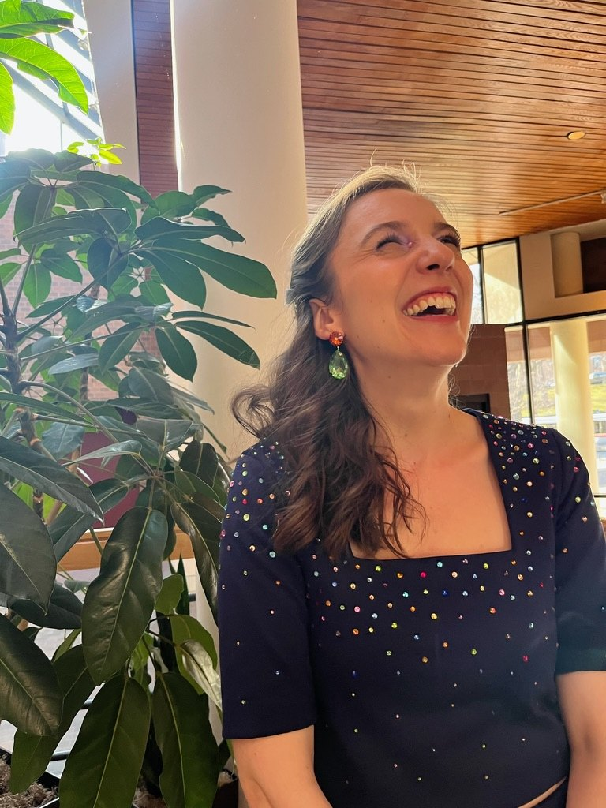

About me
Kristie is a professor, technologist, and writer. She has spent more than a decade convincing people all around the world to use their smartphones less. From launching the Apple Watch at Apple, to assigning “two hours of boredom” as homework for her college students, she has dedicated her career to strengthening heart-to-heart connection in a high tech world.
As Apple Watch Lead for WorldWide Developer Relations, her focus was evangelizing design best practices for Apple’s most personal device. She consulted on experience design for 150+ Fortune Global 500 companies and startups, and led Good to Great workshops for 70+ companies across North America, Europe, Australia, and Asia. She also penned a popular internal Apple Watch newsletter that earned her the same in-house recognition for innovation as an engineering patent.
Kristie went on to become an award-winning professor in the Marketing Department at the Boston College Carroll School of Management, where her Design Thinking class was waitlisted for ten semesters in a row, on word-of-mouth alone. She designed a one-of-a-kind curriculum to teach interpersonal skills, like empathy, public speaking, and resilience in the face of failure.
She has won several Teaching Star awards, along with the Trzaska award for expanding the horizons, skills, and value systems of students outside the classroom. She also trained for four years as a sexual assault advisor at Boston College, to provide trauma-informed care and empower students in moments of crisis.
Today, Kristie is the founder of Surprise & Delight Studios, where she designs workshops and events that desperately need human connection — from weddings, to funerals, birthday parties, conferences, speed friending nights, and a handful of epic dates.
Her talks about human connection have energized audiences in boardrooms, conferences, startup accelerators, and the TEDx stage, where she spoke about “How to start filling your life with surprise and delight.”
LinkedIn: linkedin.com/in/kristiedickinson
Email: hello@kristiedickinson.com